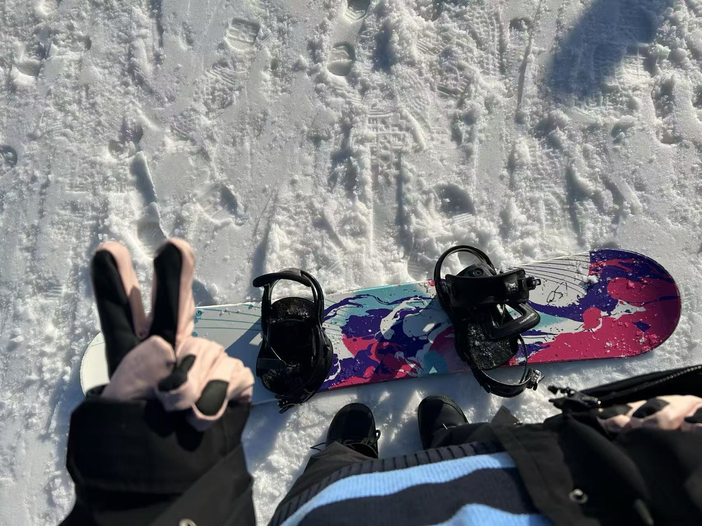
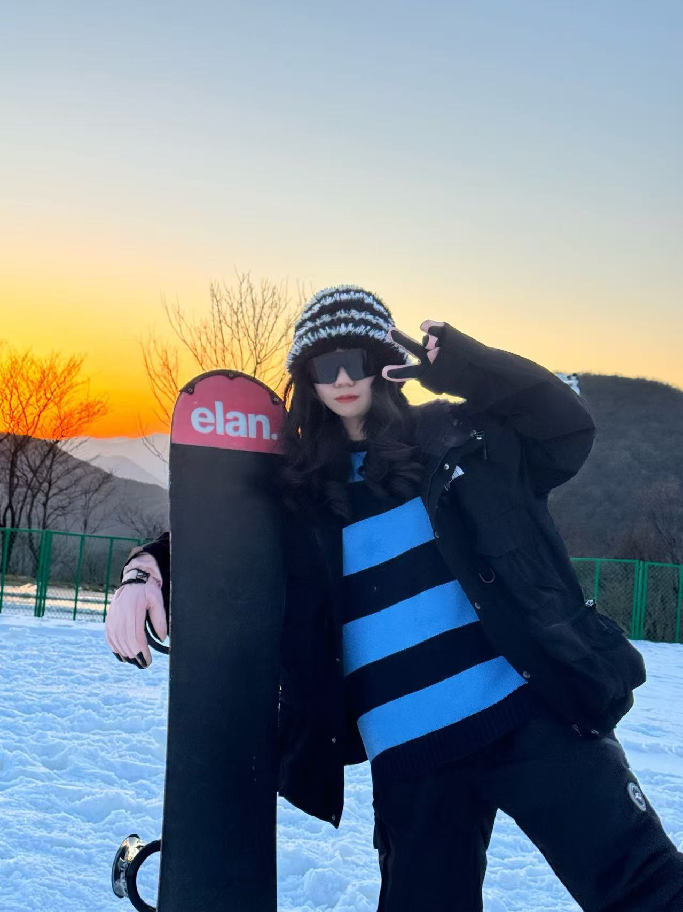
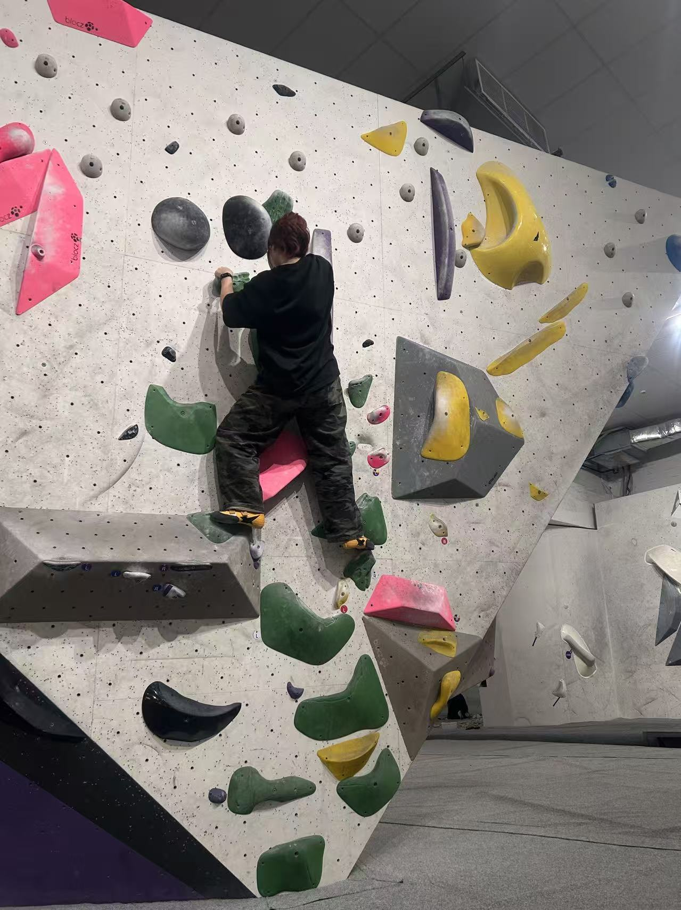
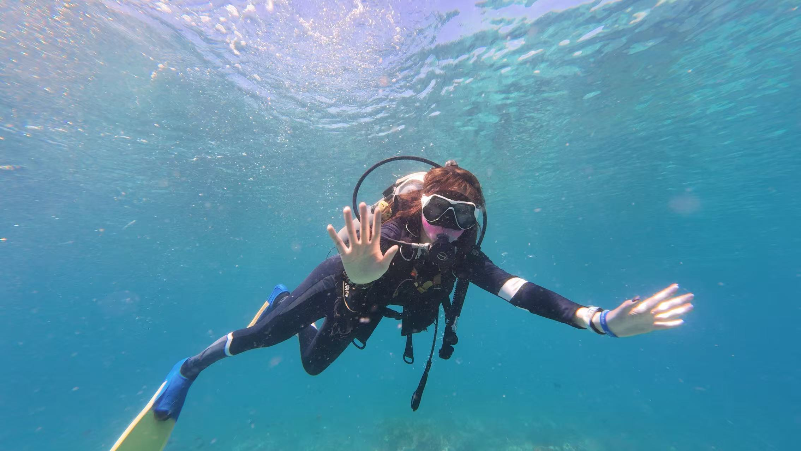

Research Assistant | MSc in Biomedical Engineering
Nanyang Technological University, Singapore
Research Interests: Microbial Diagnostics | Functional Biomaterials | Applied Bioengineering
I am a Research Assistant at Nanyang Technological University (NTU), Singapore, where I also completed an MSc in Biomedical Engineering. My academic background spans environmental microbiology, functional biomaterials, and biomedical engineering.
My current research investigates magnetic bead-based bacterial capture and enrichment, with potential applications in rapid microbial diagnostics and antimicrobial susceptibility testing. I have also worked on antimicrobial gelatin–chitosan films, bacterial isolation and characterization, and nanomaterial-related research. I am particularly interested in applied bioengineering, microbial diagnostics, and functional biomaterials.
Investigating magnetic bead-based bacterial capture and enrichment for potential applications in rapid microbial diagnostics.
Developed gelatin–chitosan composite films incorporating tannic acid–zinc modifications for functional food-packaging applications.
First inventor: Formaldehyde Catalytic Manganese-Oxygen Composite Nano Filter Material and Its Preparation Method and Application. China National Intellectual Property Administration (CNIPA), application no. 2024104079088.
MSc in Biomedical Engineering
August 2025 – June 2026
Bachelor of Engineering in Environmental Science
September 2021 – June 2025
Average Score: 85.3/100
Outside research, I enjoy skiing, climbing, diving, and skateboarding, as well as quieter creative activities such as baking, calligraphy, violin, painting, and reading mystery novels. These interests help me stay curious, focused, and balanced, while also giving me different ways to explore movement, creativity, and everyday life beyond academic work.

Movement and balance.

Exploration and confidence.

Focus and strength.

Exploration beneath the surface.
My full CV can be downloaded below.
Download CVEmail: xinleizzzhang@gmail.com
Location: Singapore